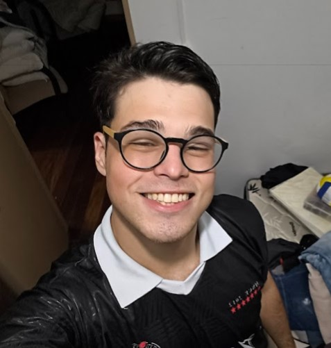

Arthur Gomes Severo
Olá, me chamo Arthur Gomes Severo. Sou Desenvolvedor front-end em formação, focado em UI, responsividade e boas práticas. Aprendizado contínuo através de projetos reais.
Olá, me chamo Arthur Gomes Severo. Sou Desenvolvedor front-end em formação, focado em UI, responsividade e boas práticas. Aprendizado contínuo através de projetos reais.


Projeto de uma landing page do jogo Red Dead Redemption 2, utilizando HTML e CSS para criar uma página responsiva e visualmente atraente. Estava no inicio do aprendizado de Front-End.
Primeira versão da Tela de Login. Não sabia nada de emojis externos para CSS3, fiquei "meio ano" parado tentando fazer responsividade.
Segunda versão da Tela de Login. Feito em aula apenas para descontrair e treinar ainda mais minhas habilidades de Front-End.
Um pequeno WebSite feito juntamente com o Gustavo Guanabara. Fiz uns "upgrades", um deles é que o relógio muda automaticamente, de acordo com o seu dispositivo.
Um projeto simples, mas treinando bem melhor a criação de sites. Uma plataforma de vendas de curso ficticia chamada "NexaTech".